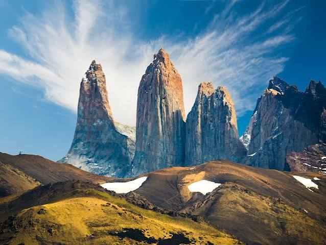
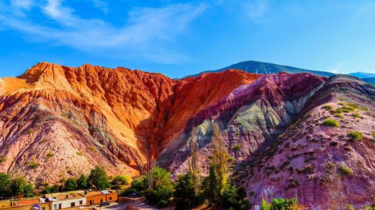

QUIÉNES SOMOS
Nuestra Filosofía
En EcoRutas creemos que viajar puede ser un acto de amor hacia el planeta. Cada destino que ofrecemos fue seleccionado con criterios ecológicos estrictos: bajo impacto ambiental, respeto por la biodiversidad local y beneficio directo para las comunidades anfitrionas.
Trabajamos con guías certificados en ecoturismo, alojamientos de construcción sustentable y operadoras comprometidas con la economía circular. Porque explorar el mundo y cuidarlo no son objetivos opuestos — son el mismo camino.

Destinos Destacados
-

Eco-certificadoTorres del Paine
Recorridos de senderismo responsable entre glaciares, lagos turquesa y macizos graníticos de la Patagonia austral.
Ver itinerario -

Eco-certificadoQuebrada de Humahuaca
Turismo comunitario y cultural en el norte argentino, valorando las tradiciones locales y sus paisajes multicolores.
Ver itinerario -
Eco-certificado
Selva Misionera
Exploración guiada de bajo impacto para conocer la biodiversidad del bosque atlántico y apoyar su conservación.
Ver itinerario
Dato Destacado
Los glaciares de la Patagonia concentran aproximadamente el 90% de las reservas de agua dulce de América del Sur. El Campo de Hielo Patagónico Sur, compartido entre Argentina y Chile, es el tercer campo de hielo continental más grande del planeta, solo superado por los de la Antártida y Groenlandia. Conservarlo es una responsabilidad global.
Leer más en Wikipedia